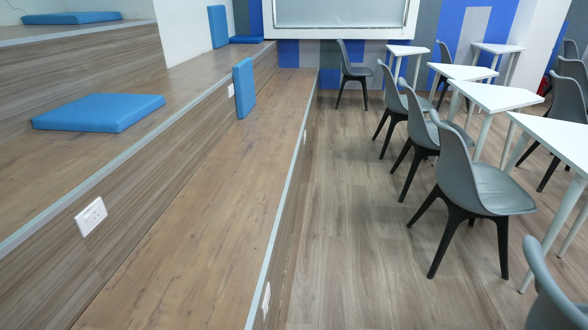

We reconstructed a classroom from C5306.MP4 only. The browser renders a 3D Gaussian Splat. Visitors can walk through the captured aisle, look around, and follow a short route to the front of the room.
The app uses Next.js, React, Three.js, and a Gaussian splat renderer. Scene metadata sets the start view, relative scale, and preview walk limits. Rendering and navigation logic are separate.
The repeat-capture SOP has seven actions. Select one room. Record one continuous video with one lens. Keep people out and use steady light. Walk slowly with translation. Show walls, floor edges, ceiling, and furniture from several positions. Avoid fast pans. Keep the raw video and checksum. Check that the camera route is continuous before training.

| Input | assets/C5306.MP4, Sony H.264 video, 3840 × 2160, 50 fps, 49.44 s |
|---|---|
| Integrity | SHA-256 9e4124bb4c7d8dd19fb31de78796f71b932256dfaacd230aeb2a75cb00c54972 |
| Selection | Sample the full video at 4 fps. This gives 198 frames. Use sequential feature matching at the source resolution. |
| Camera route | All 198 frames registered in one model. The maximum adjacent camera step was 1.22 times the median step. |
The video was supplied before this reconstruction. We did not control its original capture. We used no still photos, other video, prior camera poses, or measured room size. The source points down for much of the route. The model cannot show a complete ceiling from this recording.
Sequential PyCOLMAP reconstruction registered 198 of 198 frames in one model with 59,929 sparse points. Its mean reprojection error was 0.754 pixels. The median adjacent camera step was 0.141 model units and the maximum was 0.171.
VGGT inferred depth and camera predictions for 25 sampled frames. We fitted each depth map to sparse points from the same video. All 25 had a positive depth scale. Median relative depth error was 1.14% at matched sparse points. VGGT camera poses were less consistent, so training used PyCOLMAP poses and VGGT depth points.
.splat layout.The floor, stage steps, desks, and chairs are recognizable. A dark patch remains near the upper front wall. The ceiling and upper walls have weak coverage because the camera points down. Extra training cannot restore surfaces that the source did not record.
The C5306 room is the app's default scene. Visitors use WASD or arrow keys to move, and the mouse to look. The viewer streams the splat, shows load progress, and has a reset control. It reports camera positions and route lengths in scene units.
Search finds one front-aisle point of interest. Its route stays near recorded camera positions. Walk limits are visual estimates. The app does not claim verified furniture collision for this scene.
The repository contains the frame and camera reconstruction pipeline, VGGT depth inference and validation, floor calibration, and splat export scripts. The C5304 model remains available as an earlier comparison scene.
npm ci → npm test → npm run build → npm run startCamera reconstruction: COLMAP / PyCOLMAP. Depth: VGGT. Gaussian training: Nerfstudio Splatfacto and gsplat. Viewer: Next.js, React, Three.js, and GaussianSplats3D. Media extraction: FFmpeg. Each tool retains its own license.
The model, viewer, and matching code branch are available locally. This copy has no public viewer link. The demonstration video shows the C5306 source, the reconstruction method, the live viewer, and its current coverage limits.